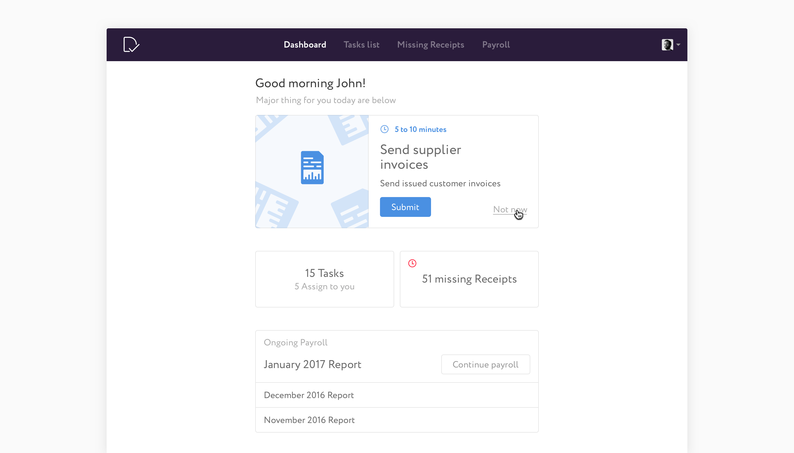
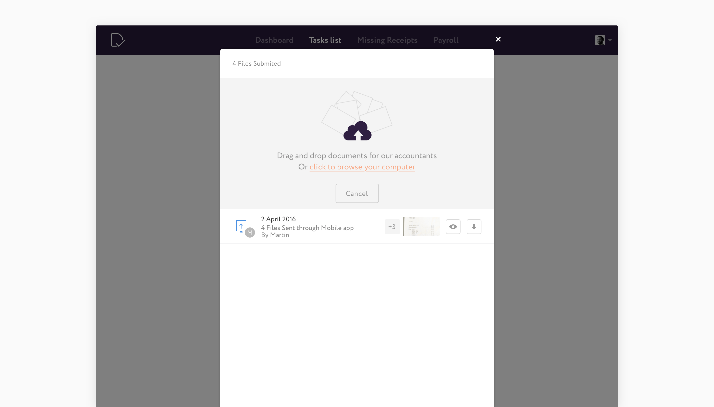
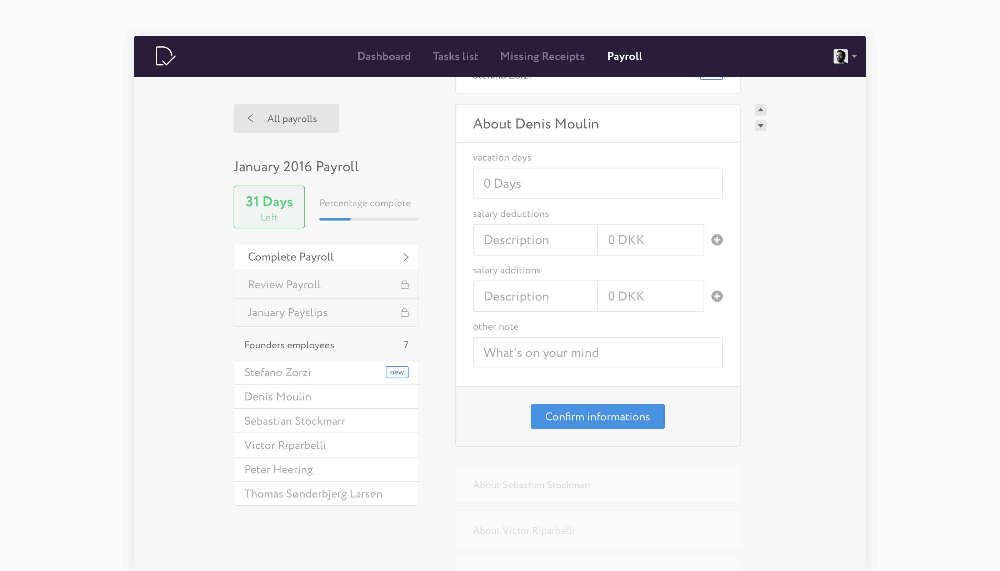
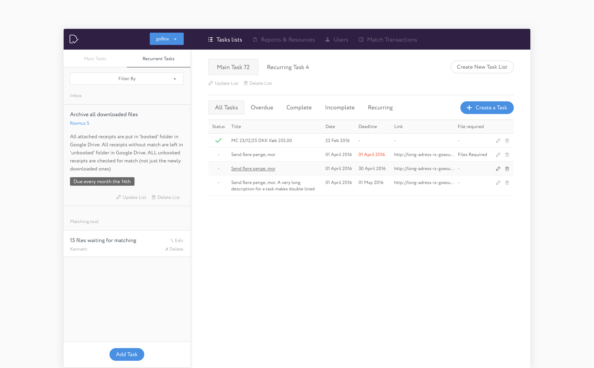

Dixie.io Customer and Bookkeeper App
Dixie is a personal back-office service for your business.
Combining actionable insights with easy access to expert bookkeepers, Dixie makes it easy to turn your company’s back office from a burden into a highly valuable set of data and tools.
I helped the team to develop their product and tools, building both the customer- and the bookkeeper-facing app.
Customer App
The main goal of the app is to help customers and companies stay on top of their bookkeeping by providing actionable insights around the most critical outstanding tasks or missing documents.

A clear dashboard helps customers focus on what’s important at the moment to keep their company’s books clean and running smoothly.

Assigning tasks or receipts to co-workers is a good way to streamline and accelerate the collection of receipts.

All documents can be uploaded to Dixie and directly transferred to the company’s bookkeeper.

Bookkeeper App
The Bookkeeper App helps the team behind Dixie to streamline work and documents sent by customers to the bookkeeping force.

A clear dashboard helps to prioritize the bookkeepers’ work for each company.

Each company has a set of tasks that can be assigned to different bookkeepers. Bookkeepers can filter and manage a company’s tasks to identify its most urgent needs.

Bookkeepers can create one-time or recurring tasks for each company.

The transaction matcher is a key element of Dixie’s Bookkeeper App. This is where a bookkeeper takes over most of the client’s uploads and matches them to current missing receipts.

Bookkeepers generally have a clear understanding of where to look to match receipts to uploads. As a last resort, they can ask the client directly using the missing receipts chat. On the other side, the client would view the same information and exchange with the bookkeeper in the same way.